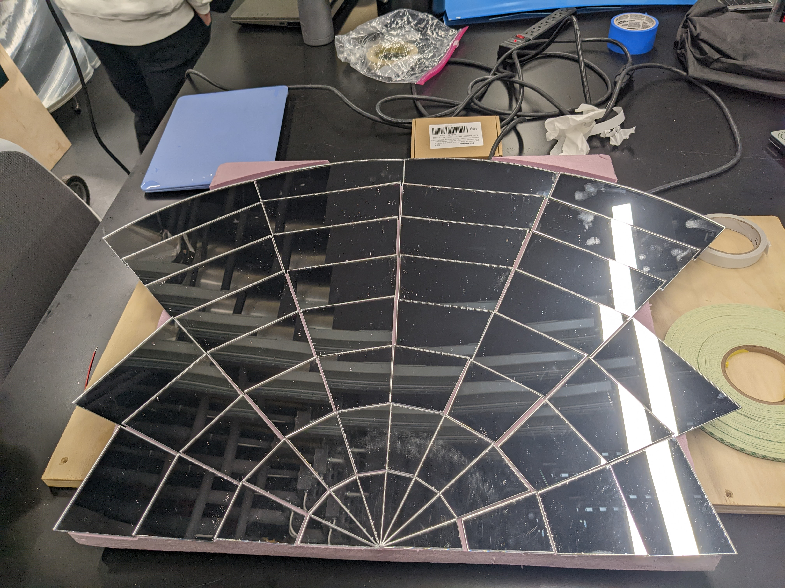
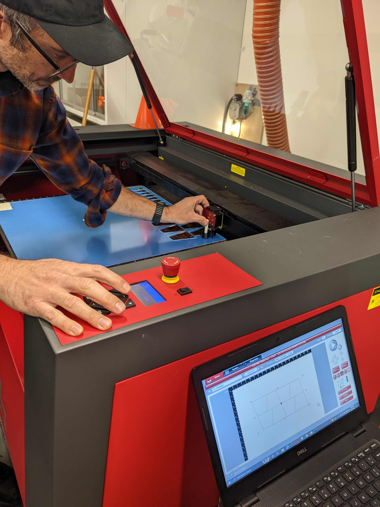

### Week 3: Assembling Fernel Mirror and Working on Solar Tracking
#### Monday - 10/3: Assembling Fernel Mirror
On Monday, we focused on taking the milled foam board and laser cutting coated-acrylic mirror widges
to be stuck onto the foam board. Through this process, we learned about how to use a laser cutter.
To laser cut a part, we used Inkscape to design the 2d part, adobe acrobat reader as an intermediary
step, and then finally "printing" the part to the ILS software which then communicated with the laser
cutter on the pattern we would like to cut. Here are some notes about what I learned about the laser
cutting process:
<ul>
<li>Make sure to set the line width, line color, and other line properties precisely</li>
<li>Before cutting a part, make sure to check that the part is in the correct place using the
manual or automated focus. Make sure to also check the material we are cutting through and the
width of the material specified.
</li>
</ul>
Otherwise, the laser cutting was very straightforward and the pieces of acrylic mirror were stuck
on to the foam board.
On the other side, we (Christine, Anna, and I) also worked on exploring the solar tracking. Christine and Anna
wrote a simple Arduino program which contained logic that responded to the amount of sunlight on each
photoresistor with turning a stepper motor in a given diretion. The next phase of this is to test the
effectiveness of placing such a solar tracking circuit on a device with 2 stepper motors with giving
us 2 degrees of freedom and determining whether the circuit can be succesfully adjusted to point towards
the light.
One other discussion we had along the way was what the best set up for rotating our actual solar cooker
would look like. One option we explored was rotation the base of the entire solar cooker which would bearings
mounted on wheels. This would mean rotating the salt brick itself. Another option was the direct the sunlight down
a reflective tube attached on one end to a reflector and other and on the other end directing light into the brick.
In this second set up, only the tube and the reflector would rotate, rather than the salt brick too. Our current
conclusion is that this will be more energy effective given that the salt brick will be very heavy to move.


### Wednesday - 10/5: 3-D Printing Pan and Tilt for Solar Tracking
To test out our solar cooker, we want to design a device with the same degrees of freedom we expect to eventaully have
on our solar cooker to check the effectiveness of our feedback system for a 2-axis (equitorial and azimuthal) system like
our solar cooker. To create a small and simple model, we are 3-D printing a Pan and Tilt laser pointing robot from an exsting
[Thingiverse model](https://www.jjrobots.com/remotely-controlled-laser-pointer/). The main complexity
here would be to design a holder that's meant for our circuit breadboard, rather than the original laser pointer holder
design.
As for my part, I focused on using the 3D printing software. There were two pieces of software we used in this process:
1. Prusa3D - software designed for our 3D printers created by the same company
2. Fusion 360 Autodesk - general CAD software
We were essentially able to download the stl files from the website and 3D print them directly by importing them
to Prusa3D and then saving them onto an SD card which was then inserted into the 3D printer. When we wanted
to make modifications on certain parts like expanding the bearing holder's diameter to fit our bearing, we
used Fusion 360 to do this.
We learned that in 3D printing, you're able to adjust the level of precision and accuracy of the machine
to change the length of different jobs.
### Goals for Next Week:
1. Complete 3D printing of other parts
2. Work on brainstorming solar tracking holder design and CADing the design with Christine + Anna